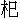

自古機深禍亦深，休貪富貴昧良心。簷前滴水毫無錯，報應昭昭自古今。
話說宋朝第一個奸臣，姓秦，名檜，字會之，江寧人氏。生來有一異相，腳面連指，長一尺四寸。在太學時，都喚他做「長腳秀才」。後來登科及第。靖康年間，累官至御史中丞。其時金兵陷汴，徽、欽二帝北遷。秦檜亦陷在虜中，與金酋撻懶郎君相善，對撻懶說道：「若放我南歸，願為金邦細作。僥倖一朝得志，必當主持和議，使南朝割地稱臣，以報大金之恩。」撻懶奏知金主，金主教四太子兀朮與他私立約誓，然後縱之南還。
秦檜同妻王氏，航海奔至臨安行在，只說道：「殺了金家監守之人，私逃歸宋。」高宗皇帝信以為真，因而訪問他北朝之事。秦檜盛稱金家兵強將勇，非南朝所能抵敵。高宗果然懼怯，求其良策。秦檜奏道：「自石晉臣事夷敵，中原至今喪氣，一時不能振作。靖康之變，宗社幾絕，此殆天意，非獨人力也。今行在草創，人心惶惶，而諸將皆握重兵在外，倘一人有變，陛下大事去矣。為今之計，莫若息兵講和，以南北分界，各不侵犯。罷諸將之兵權，陛下高枕而享富貴，生民不致塗炭，豈不美哉！」高宗道：「朕欲講和，只恐金人不肯。」秦檜道：「臣在虜中，頗為金酋所信服。陛下若以此事專委之臣，臣自有道理，保為陛下成此和議，可必萬全不失。」高宗大喜，即拜秦檜為尚書僕射。未幾，遂為左丞相。檜乃專主和議，用勾龍如淵為御史中丞，凡朝臣諫沮和議者，上疏擊去之。趙鼎、張浚、胡銓、晏敦復、劉大中、尹焞、王居正、吳師古、張九成、喻樗等，皆被貶逐。
其時岳飛累敗金兵，殺得兀朮四太子奔走無路。兀朮情急了，遣心腹王進，蠟丸內藏著書信，送與秦檜。書中寫道：「既要講和，如何邊將卻又用兵？此乃丞相之不信也。必須殺了岳飛，和議可成。」秦檜寫了回書，許以殺飛為信，打發王進去訖。一日發十二道金牌，召岳飛班師。軍中皆憤怒，河南父老百姓，無不痛哭。飛既還，罷為萬壽觀使。秦檜必欲置飛於死地，與心腹張俊商議，訪得飛部下統制王俊，與副都統制張憲有隙。將厚賞誘致王俊，教他妄告張憲謀據襄陽，還飛兵權。王俊依言出首。檜將張憲執付大理獄，矯詔遣使召岳飛父子，與張憲對理。御史中丞何鑄，鞫審無實，將冤情白知秦檜。檜大怒，罷去何鑄不用，改命万俟卨。那万俟卨素與岳飛有隙，遂將無作有，構成其獄，說岳飛、岳雲父子，與部將張憲、王貴通謀造反。大理寺卿薛仁輔等訟飛之冤；判宗正寺士㒟，請以家屬百口，保飛不反；樞密使韓世忠憤憤不平，親詣檜府爭論。俱各罷斥。獄既成，秦檜獨坐於東窗之下，躊躇此事：「欲待不殺岳飛，恐他阻撓和議，失信金邦，後來朝廷覺悟，罪歸於我；欲待殺之，奈眾人公論有礙。」心中委決不下。其妻長舌夫人王氏適至，問道：「相公有何事遲疑？」秦檜將此事與之商議。王氏向袖中摸出黃柑一隻，雙手劈開，將一半奉與丈夫，說道：「此柑一劈兩開，有何難決？豈不聞古語云『擒虎易，縱虎難』乎？」只因這句話，提醒了秦檜，其意遂決。將片紙寫幾個密字封固，送大理寺獄官。是晚，就獄中縊死了岳飛。其子岳雲與張憲、王貴，皆押赴市曹處斬。
金人聞飛之死，無不置酒相賀。從此和議遂定。以淮水中流，及唐、鄧二州為界。北朝為大邦，稱伯父；南朝為小邦，稱姪。秦檜加封太師魏國公，又改封益國公，賜第於望仙橋，壯麗比於皇居。其子秦熺，十六歲上狀元及第，除授翰林學士，專領史館。熺生子名塤，襁裕中便注下翰林之職；熺女方生，即封崇國夫人。一時權勢，古今無比。
且說崇國夫人六七歲時，愛弄一個獅貓。一日偶然走失，責令臨安府府尹立限挨訪。府尹曹泳差人遍訪，數日間，拿到獅貓數百，帶累貓主吃苦使錢，不可盡述。押送到相府，檢驗都非。乃圖形千百幅，張掛茶坊酒肆，官給賞錢一千貫。此時鬧動了臨安府，亂了一月有餘，那貓兒竟無蹤影。相府遣官督責，曹泳心慌，乃將黃金鑄成金貓，重賂妳娘，送與崇國夫人，方纔罷手。只這一節，檜賊之威權，大概可知。
晚年，謀篡大位，為朝中諸舊臣未盡，心懷疑忌，欲興大獄，誣陷趙鼎、張浚、胡銓等五十三家，謀反大逆。吏寫奏牘已成，只待秦檜署名進御。是日，檜適游西湖，正飲酒間，忽見一人披髮而至，視之，乃岳飛也。厲聲說道：「汝殘害忠良，殃民誤國，吾已訴聞上帝，來取汝命！」檜大驚，問左右，都說不見。檜因此得病歸府。次日，吏將奏牘送覽。眾人扶檜坐於格天閣下，檜索筆署名，手顫不止，落墨污壞了奏牘。立刻教重換來，又復污壞，究竟寫不得一字。長舌妻王夫人在屏後搖手道：「勿勞太師！」須臾，檜僕於几上，扶進內室，已昏憒了，一語不能發，遂死。此乃五十三家不該遭在檜賊手中，亦見天理昭然也。有詩為證：
忠簡流亡武穆誅，又將善類肆陰圖。格天閣下名難署，始信忠良有嘿扶。
檜死不多時，秦熺亦死。長舌夫人設醮追薦，方士伏壇奏章，見秦熺在陰府荷鐵枷而立。方士問：「太師何在？」秦熺答道：「在酆都。」方士逕至酆都，見秦檜、万俟卨、王俊披髮垢面，各荷鐵枷，眾鬼卒持巨梃，驅之而行，其狀甚苦。檜向方士說道：「煩君傳語夫人，東窗事發矣。」方士不知何語，述與王氏知道。王氏心下明白，吃了一驚。果然是：
人間私語，天聞若雷；暗室虧心，神目如電。
因這一驚，王氏亦得病而死。未幾，秦塤亦死。不勾數年，秦氏遂衰。後因朝廷開浚運河，畚土堆積府門。有人從望仙橋行走，看見丞相府前，縱橫堆著亂土，題詩一首於牆上，詩曰：
「格天閣在人何在？偃月堂深恨亦深。不向洛陽圖白髮，卻於郿鄔貯黃金。咲談便解興羅織，咫尺那知有照臨？寂寞九原今已矣，空餘泥泞積牆陰。」
宋朝自秦檜主和，誤了大計，反面事仇，君臣貪於佚樂；元太祖鐵木真起自沙漠，傳至世祖忽必烈滅金及宋。宋丞相文天祥，號文山，天性忠義，召兵勤王。有志不遂，為元將張弘范所執，百計說他投降不得。至元十九年，斬於燕京之柴市。子道生、佛生、環生，皆先丞相而死。其弟名璧，號文溪，以其子陞嗣天祥之後，璧、陞父子俱附元貴顯。當時有詩云：
江南見說好溪山，兄也難時弟也難。可惜梅花各心事，南枝向暖北枝寒。
元仁宗皇帝皇慶年間，文陞仕至集賢閣大學士。
話分兩頭。且說元順宗至元元初年間，錦城有一秀才，複姓胡母，名迪。為人剛直無私，常說：「我若一朝際會風雲，定要扶持善類，驅盡奸邪，使朝政清明，方遂其願。」何期時運未利，一氣走了十科不中，乃隱居威鳳山中，讀書治圃，為養生計。然感憤不平之意，時時發露，不能自禁于懷也。
一日，獨酌小軒之中。飲至半酣，啟囊探書而讀。偶得《秦檜東窗傳》，讀未畢，不覺赫然大怒，氣湧如山，大罵奸臣不絕。再抽一書觀看，乃《文山丞相遺藁》，朗誦一遍，心上愈加不平，拍案大叫道：「如此忠義之人，偏教他殺身絕嗣，皇天，皇天，好沒分曉！」悶上心來，再取酒痛飲，至於大醉。磨起墨來，取筆題詩四句於《東窗傳》上。詩云：
「長腳邪臣長舌妻，忍將忠孝苦誅夷。愚生若得閻羅做，剝此奸雄萬劫皮！」
吟了數遍，撇開一邊。再將文丞相集上，也題四句：
「隻手擎天志已違，帶間遺讚日爭輝。獨憐血胤同時盡，飄泊忠魂何處歸？」
吟罷，餘興未盡，再題四句於後：
「檜賊奸邪得善終，羨他孫子顯榮同。文山酷死兼無後，天道何曾識佞忠！」
寫罷擲筆，再吟數過，覺得酒力湧上，和衣就寢。
俄見皁衣二吏，至前揖道：「閻君命僕等相邀，君宜速往。」胡母迪正在醉中，不知閻君為誰，答道：「吾與閻君素昧平生，今見召，何也？」皂衣吏笑道：「君到彼自知，不勞詳問。」胡母迪方欲再拒，被二吏挾之而行。離城約行數裡，乃荒郊之地，煙雨霏微，如深秋景象。再行數裡，望見城郭，居人亦稠密，往來貿易不絕，如市廛之狀。行到城門，見榜額乃「酆都」二字，迪纔省得是陰府。業已至此，無可奈何。既入城，則有殿宇崢嶸，朱門高敞，題曰「曜靈之府」，門外守者甚嚴。
皂衣吏令一人為伴，一人先入。少頃復出，招迪曰：「閻君召子。」迪乃隨吏入門，行至殿前，榜曰「森羅殿」。殿上王者，袞衣冕旒，類人間神廟中繪塑神像。左右列神吏六人，綠袍皁履，高襆廣帶，各執文簿。堦下侍立百餘人，有牛頭馬面，長喙朱髪，猙獰可畏。胡母迪稽顙於堦下。冥王問道：「子即胡母迪耶？」迪應道：「然也。」冥王大怒道：「子為儒流，讀書習禮，何為怨天怒地，謗鬼侮神乎？」胡母迪答道：「迪乃後進之流，早習先聖先賢之道，安貧守分，循理修身，並無怨天尤人之事。」冥王喝道：「你說『天道何曾識佞忠』，豈非怨謗之談乎？」迪方悟醉中題詩之事，再拜謝罪道：「賊子酒酣，罔能持性。偶讀忠奸之傳，致吟忿憾之辭。顒望神君特垂寬宥。」冥王道：「子試自述其意，怎見得天道不辨忠佞？」胡母迪道：「秦檜賣國和番，殺害忠良，一生富貴善終；其子秦熺，狀元及第；孫秦塤，翰林學士，三代俱在史館。岳飛精忠報國，父子就戮。文天祥，宋末第一個忠臣，三子俱死於流離，遂至絕嗣。其弟降虜，父子貴顯。福善禍淫，天道何在？賤子所以拊心致疑，願神君開示其故。」冥王呵呵大笑：「子乃下土腐儒，天意微渺，豈能知之？那宋高宗原係錢鏐王第三子轉生。當初錢鏐獨霸吳越，傳世百年，並無失德。後因錢俶入朝，被宋太宗留住，逼之獻土。到徽宗時，顯仁皇后有孕，夢見一金甲貴人，怒目言曰：『我吳越王也。汝家無故奪我之國，吾今遣第三子托生，要還我疆土。』醒後，遂生皇子構，是為高宗。他原索取舊疆，所以偏安南渡，無志中原。秦檜會逢其適，為主和議，亦天數當然也；但不該誣陷忠良，故上帝斬其血胤。秦熺非檜所出，乃其妻兄王煥之子，長舌妻冒認為兒，雖子孫貴顯，秦氏魂魄，豈得享異姓之祭哉？岳飛係三國張飛轉生，忠心正氣，千古不磨。一次托生為張巡，改名不改姓；二次托生為岳飛，改姓不改名。雖然父子屈死，子孫世代貴盛，血食萬年。文天祥父子夫妻，一門忠孝節義，傳揚千古。文陞嫡姪為嗣，延其宗祀，居官清正，不替家風，豈得為無後耶？夫天道報應，或在生前，或在死後；或福之而反禍，或禍之而反福。須合幽明古今而觀之，方知毫釐不爽。子但據目前，譬如以管窺天，多見其不知量矣。」胡母迪頓首道：「承神君指教，開示愚蒙，如撥雲見日，不勝快幸。但愚民但據生前之苦樂，安知身後之果報哉？以此冥冥不可見之事，欲人趨善而避惡，如風聲水月，無所忌憚。宜乎惡人之多，而善人之少也。賤子不才，願得遍遊地獄，盡觀惡報，傳語人間，使知儆懼自修，未審允否？」冥王點頭道是。即呼綠衣吏，以一白簡書云：「右仰普掠獄官，即啟狴牢，引此儒生，遍觀泉扃報應，毋得違錯。」
吏領命，引胡母迪從西廊而進。過殿後三里許，在石垣高數仞，以生鐵為門，題曰「普掠之獄」。吏將門鐶叩三下，俄頃門開，夜叉數輩突出，將欲擒迪。吏叱道：「此儒生也，無罪。」便將閻君所書白簡，教他看了。夜叉道：「吾輩只道罪鬼入獄，不知公是書生，幸勿見怪。」乃揖迪而入。
其中廣袤五十餘裡，日光慘淡，風氣蕭然。四圍門牌，皆榜名額：東曰「風雷之獄」，南曰「火車之獄」，西曰「金剛之獄」，北曰「溟泠之獄」，男女荷鐵枷者千餘人。又至一小門，則見男子二十餘人，皆被髪裸體，以巨釘釘其手足於鐵牀之上，項荷鐵枷，舉身皆刀杖痕，膿血腥穢不可近。旁一婦人，裳而無衣，罩於鐵籠中，一夜叉以沸湯澆之，皮肉潰爛，號呼之聲不絕。
綠衣吏指鐵牀上三人，對胡母迪說道：「此即秦檜、万俟卨、王俊。這鐵籠中婦人，即檜妻長舌王氏也。其他數人，乃章惇、蔡京父子、王黼、朱勔、耿南仲、丁大全、韓侂冑、史彌遠、賈似道，皆其同奸黨惡之徒。王遣施刑，令君觀之。」即驅檜等至風雷之獄，縛於銅柱。一卒以鞭扣其環，即有風刀亂至，遶刺其身。檜等體如篩底。良久，震雷一聲，擊其身如齏粉，血流凝地。少頃，惡風盤旋，吹其骨肉，復聚為人形。吏向迪道：「此震擊者，陰雷也；吹者，業風也。」又呼卒驅至金剛、火車、溟泠等獄，將檜等受刑尤甚。饑則食以鐵丸，渴則飲以銅汁。吏說道：「此曹凡三日，則遍歷諸獄，受諸苦楚。三年之後，變為牛、羊、犬、豕，生於世間，為人宰殺，剝皮食肉。其妻亦為牝豕，食人不潔，臨終亦不免刀烹之苦。今此眾已為畜類於世五十餘次了。」迪問道：「其罪何時可脫？」吏答道：「除是天地重復混沌，方得開除耳。」
復引迪到西垣一小門，題曰「奸回之獄」。荷桎梏者百餘人，舉手插刃，渾類蝟形。迪問：「此輩皆何等人？」吏答道：「是皆歷代將相，奸回黨惡，欺君罔上，蠹國害民，如梁冀、董卓、盧

、李林甫之流，皆在其中。每三日，亦與秦檜等同受其刑。三年後，變為畜類，皆同檜也。」復至南垣一小門，題曰「不忠內臣之獄」。內有牝牛數百，皆以鐵索貫鼻，繫於鐵柱，四圍以火炙之。迪問道：「牛，畜類也，何罪而致是耶？」吏搖手道：「君勿言，姑俟觀之。」即呼獄卒，以巨扇拂火。須臾，烈焰亙天，皆不勝其苦，哮吼躑躅，皮肉焦爛。良久，大震一聲，皮忽綻裂，其中突出個人來。視之，俱無鬚髯，寺人也。吏呼夜叉擲於鑊湯中烹之，但見皮肉消融，止存白骨。少頃，復以冷水沃之，白骨相聚，仍復人形。吏指道：「此皆歷代宦官，秦之趙高，漢之十常侍，唐之李輔國、仇士良、王守澄、田令孜，宋童貫之徒，從小長養禁中，錦衣玉食，欺誘人主，妒害忠良，濁亂海內。今受此報，累劫無已。」
復至東壁，男女數千人，皆裸體跣足，或烹剝刳心，或剉燒舂磨，哀呼之聲，徹聞數裡。吏指道：「此皆在生時為官為吏，貪財枉法，刻簿害人及不孝不友，悖負師長，不仁不義，故受此報。」迪見之大喜，歎曰：「今日方知天地無私，鬼神明察，吾一生不平之氣始出矣。」吏指北面云：「此去一獄，皆僧尼哄騙人財，姦淫作惡者。又一獄，皆淫婦、妒婦、逆婦、狠婦等輩。」迪答道：「果報之事，吾已悉知，不消去看了。」吏笑攜迪手偕出。
仍入森羅殿，迪再拜，叩首稱謝，呈詩四句。詩曰：
「權奸當道任恣睢，果報原來總不虛。冥獄試看刑法慘，應知今日悔當初。」
迪又道：「奸回受報，僕已目擊，信不誣矣。其他忠臣義士，在於何所？願希一見，以適鄙懷，不勝欣幸。」冥王俯首而思，良久，乃曰：「諸公皆生人道，為王公大人，享受天祿。壽滿天年，仍還原所，以俟緣會，又復托生。子既求見，吾躬導之。」於是登輿而前，吩咐從者，引迪後隨。
行五里許，但見瓊樓玉殿，碧瓦參橫，朱牌金字，題曰「天爵之府」。既入，有仙童數百，皆衣紫綃之衣，懸丹霞玉珮，執彩幢絳節，持羽葆花旌。雲氣繽紛，天花飛舞；龍吟鳳吹，仙樂鏗鏘；異香馥鬱，襲人不散。殿上坐者百餘人，頭帶通天之冠，身穿雲錦之衣，足躡朱霓之履，玉珂瓊珮，光彩射人。絳綃玉女五百餘人，或執五明之扇，或捧八寶之盂，環侍左右。見冥王來，各各降階迎迓。賓主禮畢，分東西而坐。仙童獻茶已畢，冥王述胡母迪來意，命迪致拜。諸公皆答之盡禮，同聲贊道：「先生可謂『仁者，能好人，能惡人矣』。」乃別具席於下，命迪坐。迪謙讓再三不敢。王曰：「諸公以子斯文，能持正論，故加優禮，何用苦辭。」迪乃揖謝而坐。冥王拱手道：「座上皆歷代忠良之臣，節義之士，在陽則流芳史冊，在陰則享受天樂。每遇明君治世，則生為王侯將相，扶持江山，功施社稷。今天運將轉，不過數十年，真人當出，撥亂反正。諸公行且先後出世，為創功立業之名臣矣。」迪即席又呈詩四句。詩曰：
「時從窗下閱遺編，每恨忠良福不全。目擊冥司天爵貴，皇天端不負名賢。」
諸公皆舉手稱謝。冥王道：「子觀善惡報應，忠佞分別不爽。假令子為閻羅，恐不能復有所加耳。」迪離席，下拜謝罪。諸公齊聲道：「此生好善嫉惡，出於至性，不覺見之吟詠，不足深怪。」冥王大笑道：「諸公之言是也。」迪又拜問道：「僕尚有所疑，求神君剖示。僕自小苦志讀書，並無大過，何一生無科第之分？豈非前生有罪業乎？」冥王道：「方今胡元世界，天地反覆。子秉性剛直，命中無夷狄之緣，不應為其臣子。某冥任將滿，想子善善惡惡，正堪此職。某當奏知天廷，薦子以自代。子暫回陽世，以享餘齡。更十餘年後，耑當奉迎耳。」言畢，即命朱衣二吏送迪還家。迪大悅，再拜稱謝。及辭諸公而出。
約行十餘裡，只見天色漸明，朱衣吏指向迪道：「日出之處，即君家也。」迪挽住二吏之衣，欲延歸謝之，二吏堅卻不允。迪再三挽留，不覺失手，二吏已不見了。迪即展臂而寤，殘燈未滅，日光已射窗紙矣。
迪自此絕意干進，修身樂道。再二十三年，壽六十六，一日午後，忽見冥吏持牒來，迎迪赴任，車馬儀從，儼若王者。是夜，迪遂卒。又十年，元祚遂傾，天下仍歸於中國，天爵府諸公已知出世為卿相矣。後人有詩云：
王法昭昭猶有漏，冥司隱隱更無私。不須親見酆都景，但請時吟胡母詩。
本章完!